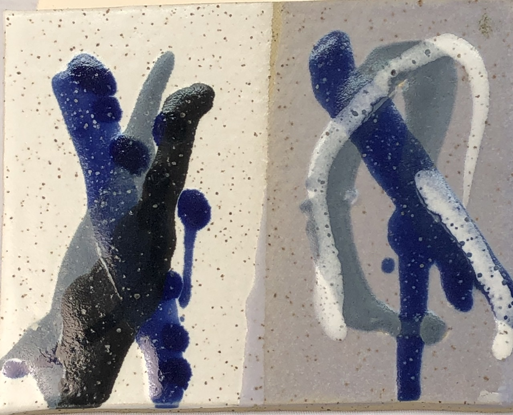
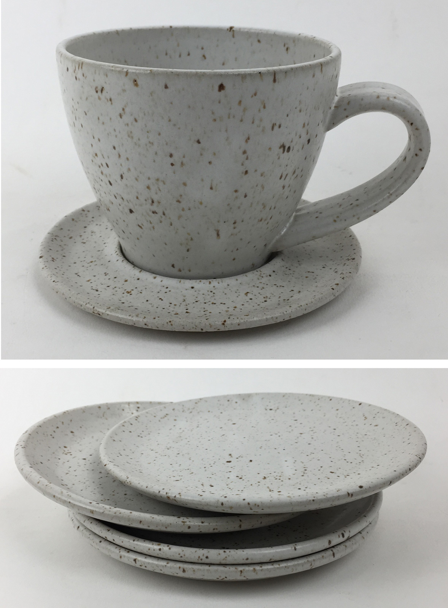
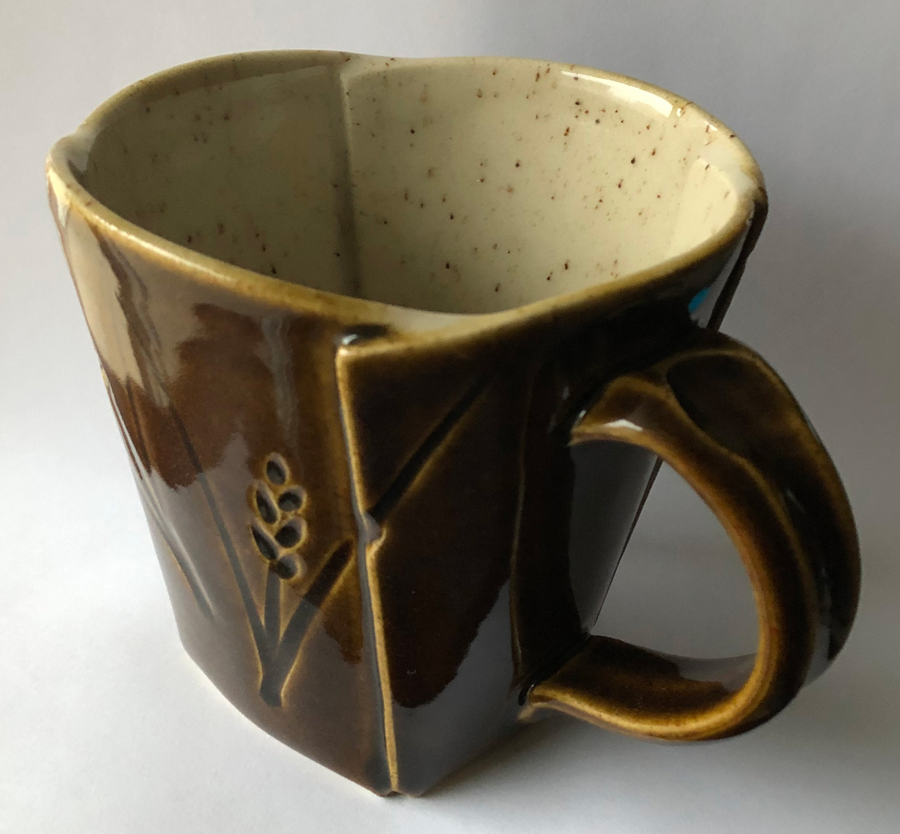
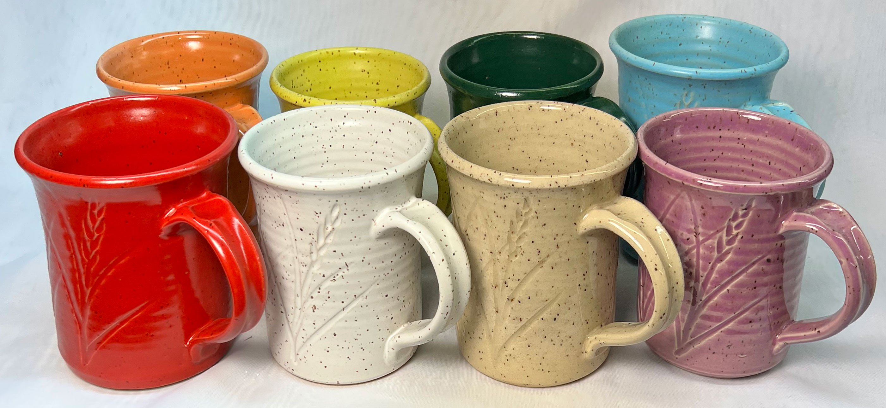

Notes
In ceramics, it is used primarily in clays and glazes to achieve fired speckle (including the brick industry). This is the same material as manganese dioxide powder, it is simply not ground to a fine powder. Various sources do not have consistent particle size distributions. The material looks more like a powder than might be expected so the manufacturers are not screening out the fines. We have seen variation in the minus 100 mesh from 10-30% and +65 mesh from 20-40%.
Typically a 60-80 mesh material is used in amounts around 0.2-0.3% in bodies firing from cone 4-6. The granular particles do not melt at cone 6 but they will bleed into glazes. They begin to decompose at cone 7, and thus will bloat bodies containing them at that temperature and up (actually bloating will often start at cone 6). Ilmenite and rutile granular do not work as effectively for this purpose.
Pyrolusite ore is a source of manganese used widely in industry for the manufacture of manganese steel, alkaline batteries, decolorizing glass agents. Pyrolusite can contain small amounts of quartz (e.g. 3%) as well as barium compounds (e.g. 2%) and trace amounts of lead (e.g. 0.2%). It is typically about 75% MnO2.
Related Information
Decomposing manganese granular particles are causing this stoneware to bloat

This picture has its own page with more detail, click here to see it.
This is a cone 6 stoneware with 0.3% 60/80 mesh manganese granular (Plainsman M340). Fired from cone 4 (bottom) to cone 8 (top). This body is normally stable to cone 8, but with the manganese it begins to bloat at cone 7! This is evidence that particles of manganese are generating gases as they decompose and melt at the same time as the body is vitrifying, these produce volumes and pressures sufficiently suddenly that closing channels within the maturing body are unable to vent them out.
The penetrating power of granular manganese specks

This picture has its own page with more detail, click here to see it.
Firing: Cone 6 oxidation. Glaze: G2934 matte. The body contains 0.2% manganese 60-80 mesh. Multiple layers of the underglaze are not able to prevent the manganese from bleeding through to stain the surface.
G2934Y glaze on Standard #112 body at cone 6

This picture has its own page with more detail, click here to see it.
This silky matte glaze produces an appearance very similar to dolomite matte glazed ware fired in cone 10 reduction. The degree of matteness can be controlled by the cooling rate of the firing. Although this body is made by Standard Ceramics, the effect would be similar using speckled bodies made by other manufacturers also. These pieces made by Tom Friedman.
Are manganese speckled clay bodies a toxicity hazard?

This picture has its own page with more detail, click here to see it.
Before jumping to conclusions consider all the factors that relate. This is M340S, it is fired at cone 6. That temperature is a "sweet spot" for this effect, high enough for the particles to bleed and low enough that they do not bloat the body. Such bodies contain only about 0.2% of 60-80 mesh granular manganese (compare this to many glazes that employ 5% powdered manganese as a colorant). Further, the vast majority of the manganese particles are encapsulated within the clay matrix. The tiny percentage exposed at the body surface are under the glaze. It is not the manganese particles themselves that expose at the glaze surface. Rather particle surfaces that contact the underside of the glaze bleed out into it from below, doing so as a function of glaze thickness and melt fluidity. Thus, food contact with a glass surface having isolated manganese-pigmented regions is not at all the same thing as with raw manganese metal. Consider also that the total area of manganese-stained glass on a functional surface is extremely small for this effect.
Wedging manganese speckle into a cone 6 buff stoneware

This picture has its own page with more detail, click here to see it.
Just need to make a few pieces? This is actually quite easy to do: Just wedge the clay over the granular manganese spread out on the board, when the board is clean turn the slug sideways and cut and layer about 20 times (to get 1 million layers). Then wedge normally. Only 0.2% manganese is needed (as a percentage of the dry clay). Since pugged clay contains 20% water it is easy to calculate the dry weight of this piece. For example, suppose this weighs 2 kg: 80% of that is 1.6 kg or 1600g. 0.2% of 1600 is 3.2 grams. Shown is the kind of mug I get. The outside glaze is G2934Y silky matte (opacified with tin and Zircopax) and the inside glaze is G2926BW glossy white. It was fired at cone 6 using the PLC6DS schedule.
Manganese speckle body with many different coloured glazes

This picture has its own page with more detail, click here to see it.
The white and colored mugs are made using the G2934 base, the transparent and purple one using the G2926B base. These are fired to cone 6 using the PLC6DS schedule. This is M340S REV, a cone 6 buff stoneware with 0.2% 60-80 mesh granular manganese added. The body has been formulated to stop a little short of typical fired maturity to assure no blistering at cone 6 (a common issue with manganese speckle additions). Of course, one can wedge the granular material into a buff stoneware body but, again, choose one that is not too vitreous (or bloating could occur). Experiment with percentage and particle size to get the desired speckle density.
Links